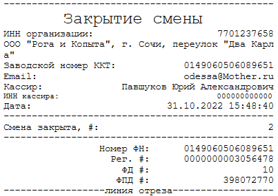
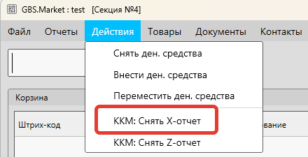
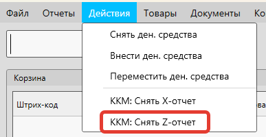
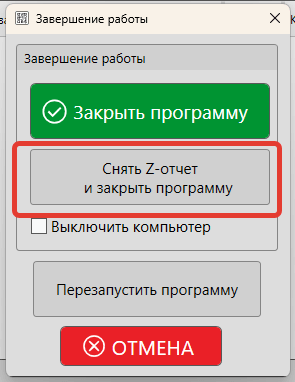
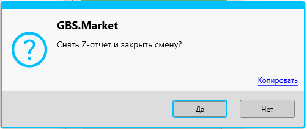

Снятие X и Z отчетов – это одна из базовых возможностей, присущих фискальным регистраторам, онлайн-кассам и другой контрольно-кассовой технике.
GBS.Market совместима с большим количеством моделей онлайн-касс и ККМ. В этой статье мы расскажем:
- Что такое x и z отчеты
- Как снять x-отчет на кассе
- Как снять z-отчет на кассе и закрыть смену
Полезные материалы
Что такое X отчет?
X-отчет фискальный документ, который содержит в себе информацию о текущем состоянии смены, денежных регистров и движении денежных средств. Это суточный отчет без закрытия смены, снимаемый на ККМ для сверки данных.
Внешний вид X-отчета и содержащаяся в нем информация обычно зависит от модели кассы. Например, такой отчет обычно содержит:
- дата и время отчета
- информация об организации
- сумма чеков продаж
- сумма чеков возврата
- остаток наличных в ККМ
- снятия и внесения денежных средств
Пример внешнего вида X-отчета
X-отчет показывает данные за текущую смену. Такой отчет может быть полезен в случаях, когда необходимо сверить продажи, проведенные по программе и данные, сохраненные в ККМ.
Например, из-за отсутствия связи с ККМ не все продажи могли попасть в кассу. Тогда, сняв такой отчет, можно будет увидеть разницу и принять необходимые меры.
Важно
Важно понимать, что в X-отчете будут отображаться те данные, которые попали в кассу. Например, если вы напечатали нефискальный чек – он в ККМ не передается и, следовательно, не будет учтен в X-отчете.
Полезные материалы
Что такое Z-отчет?
Z-отчет фискальный документ, который содержит в себе информацию о текущем состоянии смены, денежных регистров и движении денежных средств с последующим закрытием смены. Так же Z-отчет называют "отчет с гашением"
По внешнему виду Z-отчет не сильно отличается от X-отчета и может содержать аналогичную информацию:
- дата и время отчета
- информация об организации
- сумма чеков продаж
- сумма чеков возврата
- остаток наличных в ККМ
- снятия и внесения денежных средств
Z-отчет отличается от X-отчета тем, что снятие такого отчета влечет за собой закрытие смены в кассе. Иногда Z-отчет может выглядеть как квитанция о закрытии смены, как показано ниже.
Внешний вид отчета о закрытии смены
Как снять отчет в программе?
Снятие X-отчета не является обязательным. Его обычно используют для сверки данных. А вот снятие Z-отчета – обязательная операция в конце смены. Обычно, кассовая техника не позволяет работать в рамках одной смены более 24 часов.
Как снять X-отчет в программе?
Снять x-отчет можно с главной формы программы, нажав в меню Действия – ККМ: снять X-отчет.
По аналогии операция доступна и в основной форме режима "Кафе"
После этого программа передаст команду в ККМ, которая в свою очередь и напечатает отчет.
Как снять Z-отчет в программе и закрыть смену?
Важно
Важно понимать, что смена обычно не должна превышать по длительности 24 часа, иначе работа с кассой будет заблокирована до тех пор, пока Z-отчет не будет снят. Следующая смена открывается автоматически при печати первого чека – с этого момента и начинается отчет 24 часов.
Снять Z-отчет можно несколькими способами.
Первый способ – снятие Z-отчет из меню главной формы: Действия – ККМ: снять Z-отчет.
Второй способ – кнопка в форме закрытия программы "Снять Z-отчет и закрыть программу", которая появляется, когда завершаете работу с программой.
После этого программа запросит подтверждение на снятие Z-отчета и закрытие смены.
В появившемся окне нажмите "Да", чтобы выполнить необходимое действие. После этого отчет будет напечатан, а смена закрыта.
Примечания
- Пункты в меню доступны только в том случае, если в настройках печати чеков указан фискальный регистратор. В противном случае пункты не отображаются.
- Если смена не была открыта (или уже была закрыта), то программа может сообщить об ошибке о невозможности закрытия смены.
- Открытие смены происходит автоматически при печати первого чека – дополнительные действия не требуются
- Внешний вид отчетов, снимаемых на ККМ, зависит от модели и прошивки кассы и не может быть настроен в GBS.Market
Вопросы и ответы
Как работать со сменами в программе, если касса не используется?
В программе GBS.Market сейчас нет внутреннего разделения рабочего дня на смены.
Т.е. если касса совместно с программой не используется, то:
- при запуске программы не нужно открывать смену
- при завершении работы нет необходимости смену закрывать
Как открыть смену в кассе через программу?
Открытие кассовой смены в ККМ происходит автоматически при выполнении первой фискальной операции через кассу в случае, если смена в ККМ закрыта. Т.е. нет необходимости выполнять открытие смены вручную – программа это сделает автоматически.